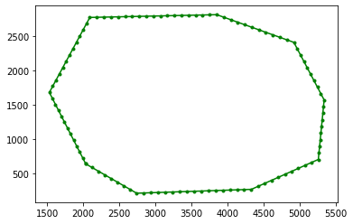
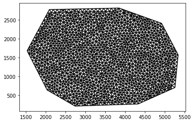

Writing an unstructured meshkernel meshes to ugrid file#
This is a basic introduction for writing meshkernel meshes to file.
First, UGrid is imported
from ugrid import UGrid, UGridMesh2D
from ugrid.version import __version__
__version__
'0.12.0'
Then meshkernel is imported
from meshkernel import meshkernel, Mesh1d, MeshKernel, GeometryList
Other imports
import numpy as np
from pathlib import Path
import matplotlib.pyplot as plt
Simple triangular mesh in a given geometry#
First, we use numpy to load data from Deltares’ custom polygon file “test.pol”. Please note we ignore the first few rows in the file to skip some Deltares specific data.
polygon_file_path = Path().absolute() / "data_examples" / "test.pol"
polygon_np = np.loadtxt(polygon_file_path, comments="*", skiprows=8, dtype=np.double)
Now, we will extract the data loaded from the file and save it as required by MeshKernel in a GeometryList.
x_coordinates = np.array(polygon_np[:, 0], dtype=np.double)
y_coordinates = np.array(polygon_np[:, 1], dtype=np.double)
polygon = GeometryList(x_coordinates, y_coordinates)
This is how the imported polygon looks like:
fig, ax = plt.subplots()
ax.plot(x_coordinates, y_coordinates, ".-", color="green");

mk = MeshKernel()
mk.mesh2d_make_mesh_from_polygon(polygon)
mesh2d_output_0 = mk.mesh2d_get()
fig, ax = plt.subplots()
mesh2d_output_0.plot_edges(ax, color="black")

Write a meshkernel mesh2d#
Write UGrid mesh2d to file#
mesh2d_mesh_kernel = mk.mesh2d_get()
with UGrid("./TriangularMesh2DMesKernelWrite_net.nc", "w+") as ug:
# 1. Convert a meshkernel mesh2d to an ugrid mesh2d
mesh2d_ugrid = ug.from_meshkernel_mesh2d_to_ugrid_mesh2d(mesh2d=mesh2d_mesh_kernel, name="mesh2d", is_spherical=False)
# 2. Define a new mesh2d
topology_id = ug.mesh2d_define(mesh2d_ugrid)
# 3. Put a new mesh2d
ug.mesh2d_put(topology_id, mesh2d_ugrid)
# 4. Add crs to file
attribute_dict = {
"name": "Unknown projected",
"epsg": np.array([0], dtype=int),
"grid_mapping_name": "Unknown projected",
"longitude_of_prime_meridian": np.array([0.0], dtype=float),
"semi_major_axis": np.array([6378137.0], dtype=float),
"semi_minor_axis": np.array([6356752.314245], dtype=float),
"inverse_flattening": np.array([6356752.314245], dtype=float),
"EPSG_code": "EPSG:0",
"value": "value is equal to EPSG code"}
ug.variable_int_with_attributes_define("projected_coordinate_system", attribute_dict)
# 5. Add conventions (global attributes)
conventions = {
"institution": "Deltares",
"references": "Unknown",
"source": "Unknown Unknown. Model: Unknown",
"history": "Created on 2017-11-27T18:05:09+0100, Unknown",
"Conventions": "CF-1.6 UGRID-1.0/Deltares-0.8"}
ug.attribute_global_define(conventions)